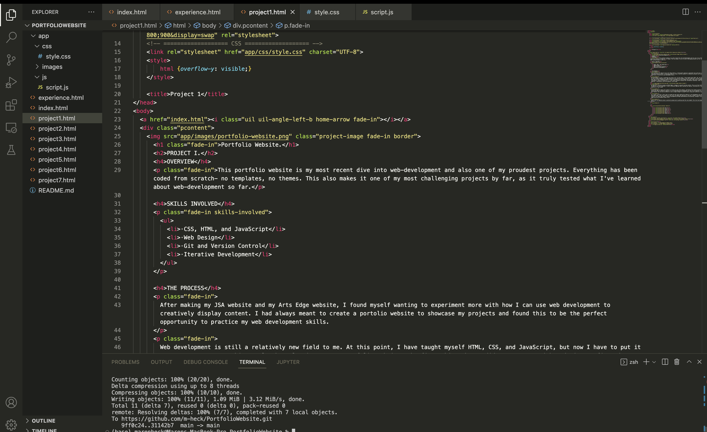
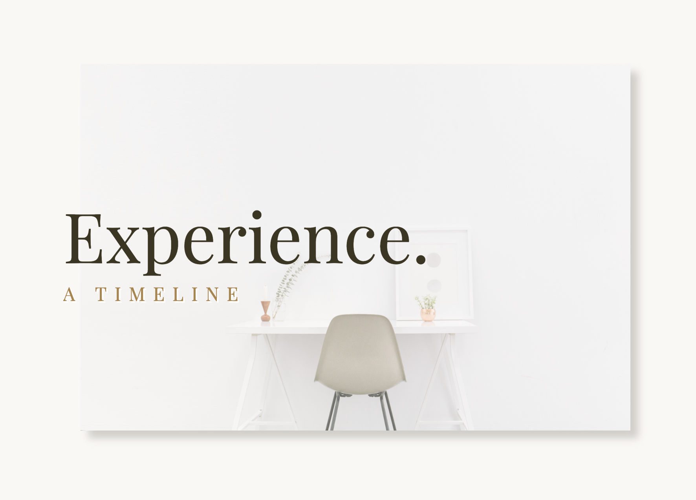

This portfolio website is my most recent dive into web-development and also one of my proudest projects. Everything has been coded from scratch- no templates, no themes. This also makes it one of my most challenging projects by far, as it truly tested what I've learned about web-development so far.
After making my JSA website and my Arts Edge website, I found myself wanting to experiment more with how I can use web development to creatively display content. I had always meant to create a portolio website to showcase my projects and found this to be the perfect opportunity to practice my web development skills.
Web development is still a relatively new field to me. At this point, I have taught myself HTML, CSS, and JavaScript, but now I have to put it to use to create something real. When planning out my portfolio website, the first thing that I did was come up with a design. I figured out what type of tone I wanted my website to have (I decided to go with elegant and clean), what colors I wanted the website to have, and what information I wanted to display on it. I also really wanted to display this information creatively. After looking through inspiration websites, I discovered a cool CSS property: scroll-snap.
My website is currently hosted on Github Pages. I manage it using Git version control. This is my first multi-page website so far, so I have to keep all my files organized. I took an iterative approach when creating this website, starting with a simple framework and then adding features as I went along.
The hardest part of making this website is fixing all the little details. Everything from content overflow to maintaining visual appeal to making the website responsive requires a lot of troubleshooting and debugging. My lack of any templates or libraries makes the whole process more tedious, but also more worthwhile to work through (though I do hope to start using more libraries in my next website).
As a result, the skill I feel like I've honed the most while making this website is not programming, but rather debugging. I have a vision in mind about what I want this website to look like, but making the code work in the way I intend is the difficult part. I also feel like I've learned a lot about what makes a website eye-appealing through experimentation and planning. Although I certainly have a long way to go, I am happy with how the website looks so far.
Best of all: my website serves a practical purpose and is getting used this very moment! This fact has helped keep me motivated throughout the process.
